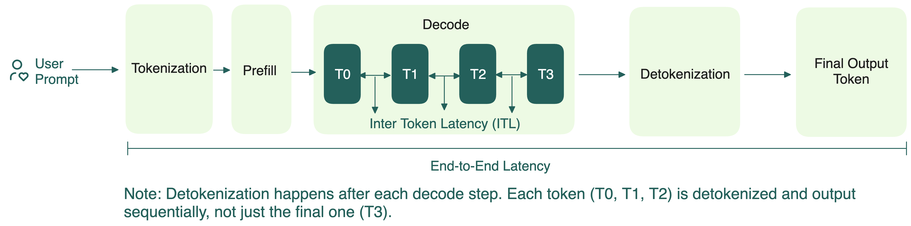
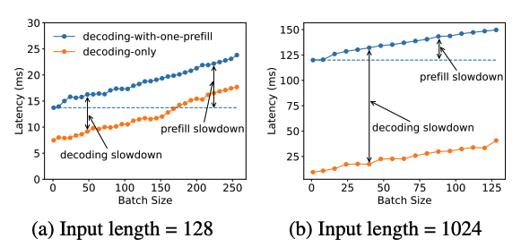

Prefill-decode disaggregation
To understand prefill-decode (PD) disaggregation, let’s briefly review how LLM inference actually works in two steps:
- Prefill: Processes the entire sequence in parallel and store key and value vectors from the attention layers in a KV cache. Because it’s handling all the tokens at once, prefill is compute-bound, but not too demanding on GPU memory.
- Decode: Generates the output tokens, one at a time, by reusing the KV cache built earlier. Different from prefill, decode requires fast memory access but lower compute.

For a long time, the standard way of doing inference was to run these two steps together. On the surface, this might seem straightforward.
In practice, you’ll often have multiple requests arriving at once. Each one has its own prefill and decode needs, but only one phase can run at a time. When the GPU is occupied with compute-heavy prefill tasks, decode tasks must wait, which increases ITL, and vice versa.
Since prefill primarily determines the TTFT and decode impacts ITL, collocating them makes it difficult to optimize both metrics simultaneously.

Why disaggregation makes sense
The idea of PD disaggregation is simple: separate these two very different tasks so they don’t get in each other’s way. Key benefits include:
- Dedicated resource allocation: Prefill and decode can be scheduled and scaled independently on different hardware. For example, if your workload has lots of prompt overlap (like multi-turn conversations or agentic workflows), it means much of your KV cache can be reused. As a result, there’s less compute demand on prefill and you can put more resources on decode.
- Parallel execution: Prefill and decode phases don’t interfere with each other anymore. You can run them more efficiently in parallel, which means better concurrency and throughput.
- Independent tuning: You can implement different optimization techniques (like tensor or pipeline parallelism) for prefill and decode to better meet your goals for TTFT and ITL.
Several open-source frameworks and projects are actively exploring PD disaggregation, including SGLang, vLLM, Dynamo, and llm-d.
Disaggregation isn’t always a silver bullet
As promising as PD disaggregation sounds, it’s not a one-size-fits-all fix.
- Thresholds matter: If your workload is too small, or your GPU setup isn’t tuned for this approach, performance can drop (by 20-30% in our tests).
- Local prefill can be faster: For shorter prompts or when the decode engine has a high prefix cache hit, running prefill locally on the decode worker is often faster and simpler.
- Data transfer cost: Disaggregation requires moving KV caches rapidly and reliably between prefill and decode workers. This means your solution must support fast, low-latency communication protocols that are both hardware- and network-agnostic. Unless the performance gains from disaggregation outweigh the data transfer cost, overall performance can actually degrade. Existing methods for data transfer for your reference: NVIDIA Inference Xfer Library (NIXL), CXL, NVMe-oF.